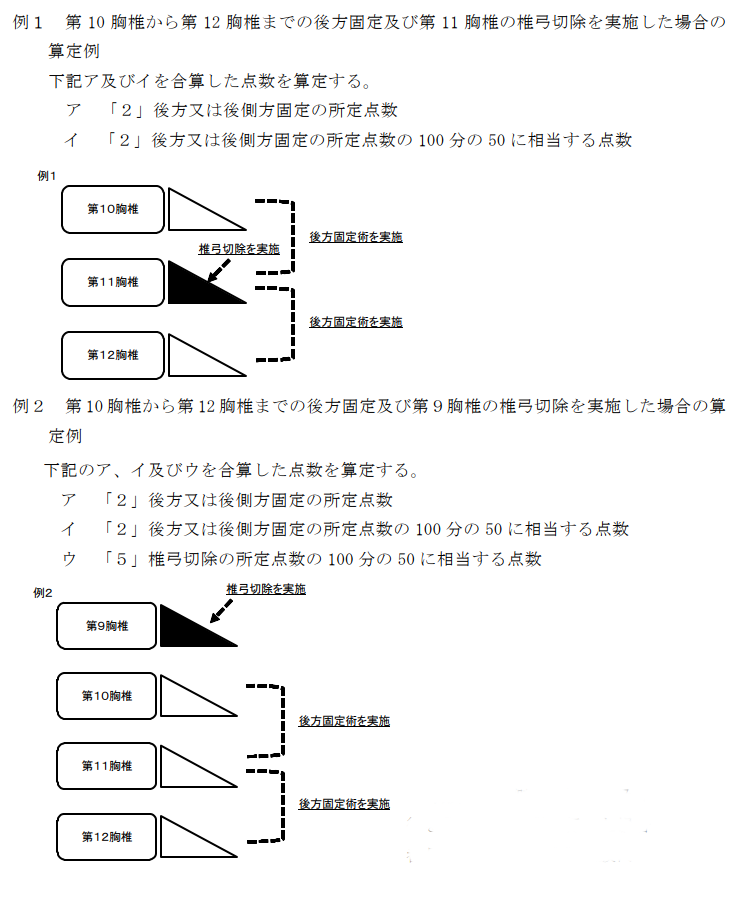

１ 前方椎体固定 41,710点
２ 後方又は後側方固定 32,890点
３ 後方椎体固定 41,160点
４ 前方後方同時固定 74,580点
５ 椎弓切除 13,310点
６ 椎弓形成 24,260点
注
１ 椎間又は椎弓が併せて２以上の場合は、１椎間又は１椎弓を追加するごとに、
追加した当該椎間又は当該椎弓に実施した手術のうち主たる手術の所定点数の100分の50に相当する点数を加算する。ただし、加算は椎間又は椎弓を併せて４を超えないものとする。
２ ２から４までに掲げる手術の所定点数には、注１の規定にかかわらず、当該手
術を実施した椎間に隣接する椎弓に係る５及び６に掲げる手術の所定点数が含まれる。
通知
(１) 「２」後方又は後側方固定から「４」前方後方同時固定までの各区分に掲げる手術の費
用には、当該手術を実施した椎間に隣接する椎弓に係る「５」椎弓切除及び「６」椎弓形成の費用が含まれる。
例１ 第10胸椎から第12胸椎までの後方固定及び第11胸椎の椎弓切除を実施した場合の
算定例下記ア及びイを合算した点数を算定する。
ア 「２」後方又は後側方固定の所定点数
イ 「２」後方又は後側方固定の所定点数の100分の50に相当する点数

(２) 骨形成的片側椎弓切除術及び髄核摘出術
を併せて２椎間に行った場合は、区分番号「Ｋ１８６」脊髄硬膜内神経切断術に準じて算定する。